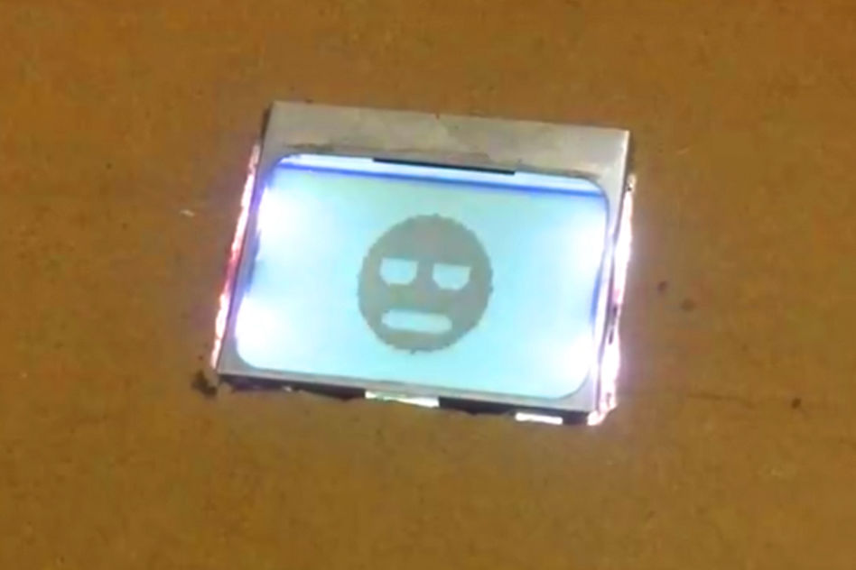
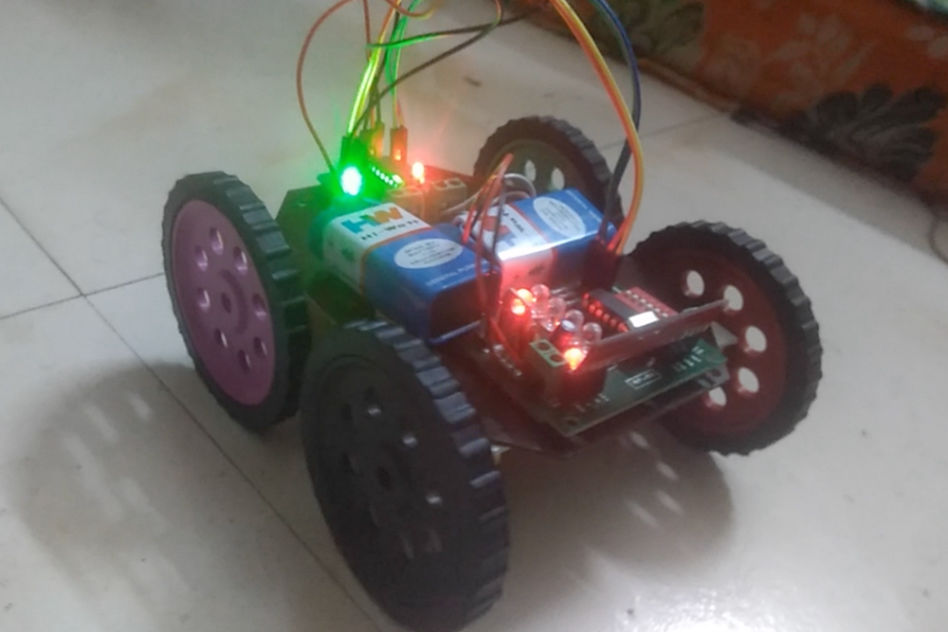
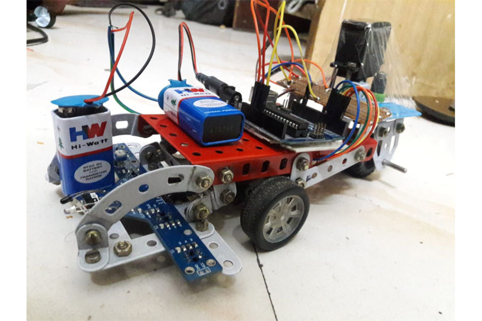
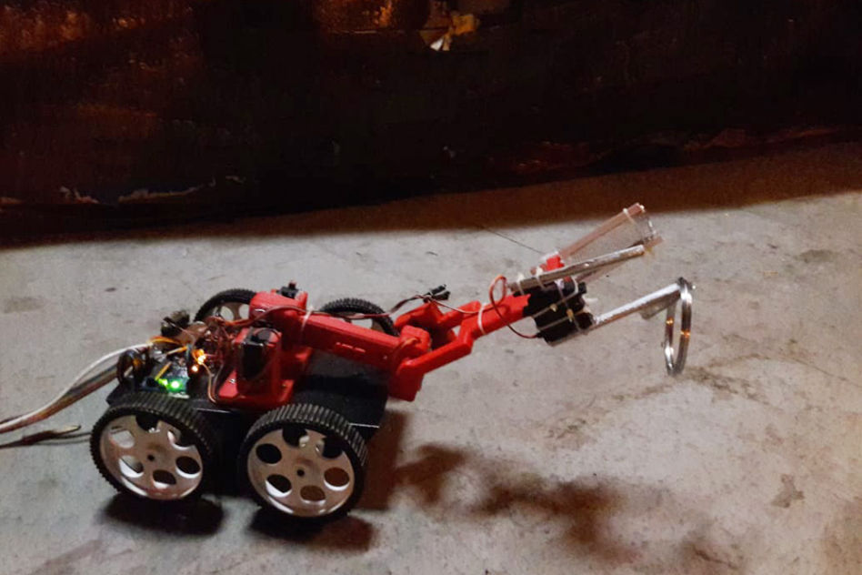

may 2018

B.H.A.I (bhai means brother in Hindi) is a virtual agent I created which connects to an android smartphone over bluetooth and receives voice commands to perform tasks like controlling electronic and electrical devices around the house. All the commands are hard-coded, there is no AI being used in B.H.A.I. The commands are converted to text in the android app and the string is sent to the HC-05 bluetooth module. the Arduino then reads the commands from the serial interface and executes the required function.
Full instructions available on instructables
github link

A wireless gesture controlled robot with an Arduino Lilypad as the master and an Arduino UNO R3 as the slave. The wireless communication was set up using a TX433 - RX433 Radio Frequency transmitter and receiver pair. The gestures were read by a 3-axis accelerometer present on the handheld remote.
see on github
april 2018
october 2017

Servo motor controlled Line Following Robot. This was a trial project in which instead of using driving motors to change the direction of movement, the direction control was done using a servo motor and a third wheel placed in the centre. The robot used only one driving motor to drive both the wheels and one servo for direction control. Using a servo gave us control over the angle by which to change the direction therefore, a higher precision.
Power supply: Two 9v batteries.

A remote controlled pick-and-place robot running on Arduino MEGA equipped with a custom 3D printed arm for picking up objects. The arm operates using 4 servo motors -- 2 for shoulder, one for elbow and one for the claw -- and is controlled by three single-axis joysticks (one for each joint).
Power supply: AC to 12v DC 30A motor and actuator power supply.
march 2017
november 2016
A line following robot running on Arduino UNO R3 using a 5 IR sensor array to detect the line and an L293D motor driver.
Power supply: One 9v battery.
see on github
Website was designed with Mobirise